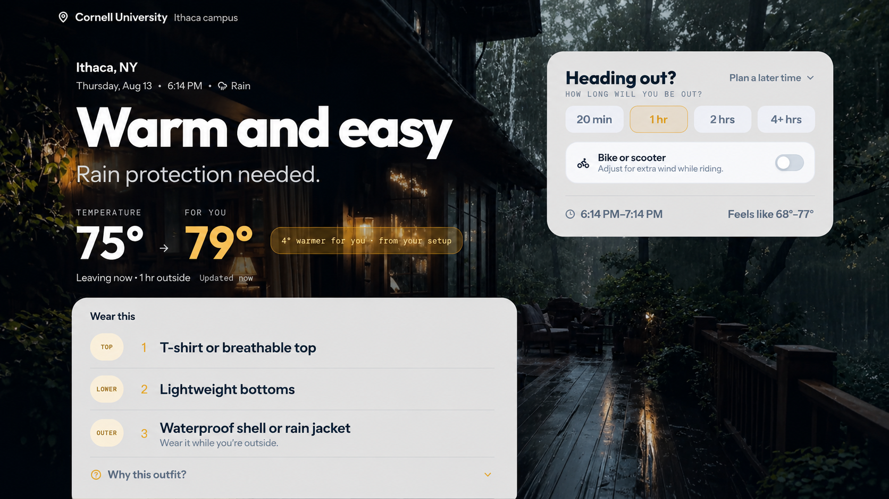

Layer
A personalized weather app that turns forecast data into clothing guidance and learns from user feedback.
The idea came from adapting to Ithaca weather after growing up in Kumasi. A forecast could be accurate and still leave me unsure what to wear. I built Layer to close that gap. What started as a frontend idea grew into persistence, sync, authentication, feedback, and testing.
- Designed the PostgreSQL schema and Row-Level Security rules for profiles, calibration state, and feedback.
- Built local-first behavior with queued writes and idempotency protection so weak connections do not create duplicate records.
- Separated the personalization logic from the UI and covered it with 40 unit tests.
- Added GitHub Actions checks for tests, regression checks, and builds before deployment.
ReactJavaScriptPostgreSQL
SupabaseVitestGitHub Actions